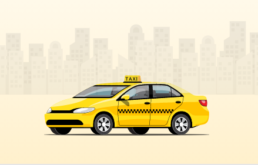

<mat-drawer-container class="example-container">
    <mat-drawer #drawer mode="side" opened>
        <div class="logo-container">
            
        </div>
        <mat-list role="list">
            <mat-list-item role="listitem" [routerLinkActiveOptions]="{exact: true}" routerLinkActive="active"
                routerLink="">
                <div class="listItem">
                    <mat-icon>home</mat-icon>
                    <span>لوحة التحكم</span>
                </div>
            </mat-list-item>
            <mat-list-item role="listitem" routerLinkActive="active" routerLink="/clients">
                <div class="listItem">
                    <mat-icon>supervisor_account</mat-icon>
                    <span>الزبائن</span>
                </div>
            </mat-list-item>
            <mat-list-item role="listitem" routerLinkActive="active" routerLink="/trips">
                <div class="listItem">
                    <mat-icon>directions_car</mat-icon>
                    <span>الرحلات</span>
                </div>
            </mat-list-item>
            <mat-list-item role="listitem" routerLinkActive="active" routerLink="/discount-codes">
                <div class="listItem">
                    <mat-icon>arrow_downward</mat-icon>
                    <span>أكواد الحسم</span>
                </div>
            </mat-list-item>
            <mat-list-item role="listitem" routerLinkActive="active" routerLink="/cancle">
                <div class="listItem">
                    <mat-icon>backspace</mat-icon>
                    <span>أسباب إلغاء الرحلة</span>
                </div>
            </mat-list-item>
        </mat-list>
        <div class="car-container">
            
        </div>
    </mat-drawer>
    <mat-drawer-content>
        <button mat-mini-fab mat-icon-button (click)="drawer.toggle(); clicked()" class="example-icon toggle-button">
            <div *ngIf="isOpened; else isClosed">
                <mat-icon>arrow_forward</mat-icon>
            </div>
            <ng-template #isClosed>
                <mat-icon>arrow_back</mat-icon>
            </ng-template>
        </button>
        <mat-card>
            <mat-card-content>
                <router-outlet></router-outlet>
            </mat-card-content>
        </mat-card>
    </mat-drawer-content>
</mat-drawer-container>